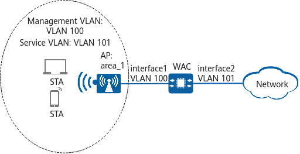

On the WLAN of a conference hall, a WAC is deployed and connects to the upper-layer network. When too many users access the WLAN, wireless channel contention is fierce. To improve Internet experience of users on the WLAN, the customer requires that the number of access users on each AP be controlled.
For details about the basic networking example, see Configuration Examples for WLAN STA Management.

Item |
Data |
|---|---|
2.4 GHz radio profile |
|
RRM profile |
|
Configure the user CAC function and adjust CAC parameters to control the number of access users on each AP.
Configure multicast packet suppression on interfaces directly connecting the device to APs.
For details on how to configure traffic suppression, see How Do I Configure Multicast Packet Suppression to Reduce Impact of a Large Number of Low-Rate Multicast Packets on the Wireless Network?
Item |
Command |
Data |
|---|---|---|
AP group to which an AP belongs |
display ap all |
AP group: ap-group1 |
All profiles bound to the AP group |
display ap-group name ap-group1 |
VAP profile: wlan-net Regulatory domain profile: domain1 |
All profiles bound to the VAP profile |
display vap-profile name wlan-net |
SSID profile: wlan-net |
# Create the RRM profile user-cac, enable user CAC based on the number of users, and set the CAC thresholds for new STAs and roaming STAs both to 32. Enable the function of denying access from weak-signal STAs and set the RSSI threshold to 25 dB. Enable automatic SSID hiding when the number of access STAs reaches the threshold.
<WAC> system-view [WAC] wlan [WAC-wlan] rrm-profile name user-cac [WAC-wlan-rrm-prof-user-cac] uac client-number enable [WAC-wlan-rrm-prof-user-cac] uac client-number threshold access 32 roam 32 [WAC-wlan-rrm-prof-user-cac] uac client-snr enable [WAC-wlan-rrm-prof-user-cac] uac client-snr threshold 25 [WAC-wlan-rrm-prof-user-cac] uac reach-access-threshold hide-ssid [WAC-wlan-rrm-prof-user-cac] quit
# Create the 2.4 GHz radio profile wlan-radio2g and bind the RRM profile user-cac to the radio profile.
[WAC-wlan] radio-2g-profile name wlan-radio2g [WAC-wlan-radio-2g-prof-wlan-radio2g] rrm-profile user-cac [WAC-wlan-radio-2g-prof-wlan-radio2g] quit
# Bind the 2.4 GHz radio profile wlan-radio2g to the AP group ap-group1.
[WAC-wlan] ap-group name ap-group1 [WAC-wlan-ap-group-ap-group1] radio-2g-profile wlan-radio2g [WAC-wlan-ap-group-ap-group1] quit
STAs can discover the WLAN with the SSID wlan-net and successfully associate with the WLAN. Run the display station ssid wlan-net command on the WAC. The command output shows that the STAs are connected to the WLAN with the SSID wlan-net.
[WAC-wlan] display station ssid wlan-net Rf/WLAN: Radio ID/WLAN ID Rx/Tx: link receive rate/link transmit rate(Mbps) Total: 1 2.4G: 1 5G: 0 6G: 0 ---------------------------------------------------------------------------------------- STA MAC AP ID Ap name Rf/WLAN Band Type Rx/Tx RSSI VLAN IP address ---------------------------------------------------------------------------------------- 00e0-fcc7-1e08 0 area_1 0/1 2.4G 11n 65/38 -29 101 10.23.101.254 ----------------------------------------------------------------------------------------
Run the display rrm-profile name user-cac command on the WAC to check the user CAC configuration.
[WAC-wlan] display rrm-profile name user-cac ... UAC check client's SNR : enable UAC client's SNR threshold(dB) : 25 UAC check client number : enable UAC client number access threshold : 32 UAC client number roam threshold : 32 Action upon reaching the UAC threshold : SSID hide ...
# sysname WAC # wlan rrm-profile name user-cac uac reach-access-threshold hide-ssid uac client-snr enable uac client-snr threshold 25 uac client-number enable uac client-number threshold access 32 roam 32 radio-2g-profile name wlan-radio2g rrm-profile user-cac ap-group name ap-group1 radio 0 radio-2g-profile wlan-radio2g vap-profile wlan-vap wlan 1 radio 1 vap-profile wlan-vap wlan 1 # return